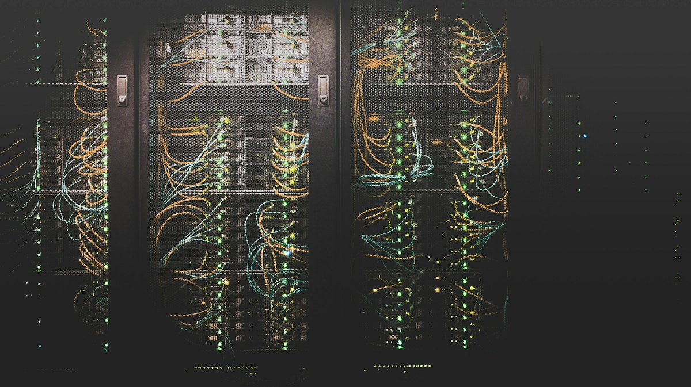
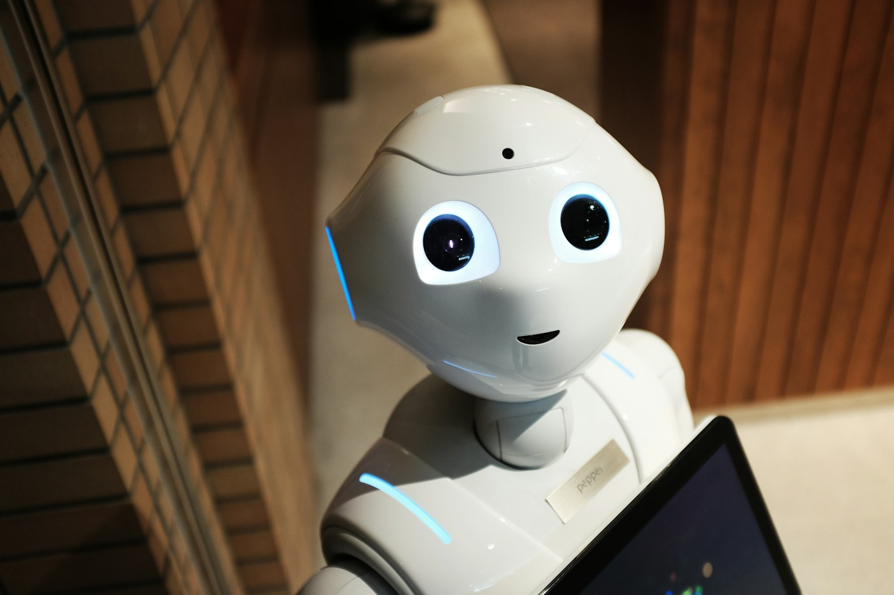

CONNECTED WORLDЦелый мир.
Целый мир.
В одном облаке.
Данные и программы доступны через интернет — от школьного проекта до больших научных открытий.
Крути барабан, открывай буквы и разгадывай технологии, которые меняют мир. Твоё поле чудес начинается здесь.


Данные и программы доступны через интернет — от школьного проекта до больших научных открытий.
Заверши все семь раундов и получи именной сертификат с результатом. Сохрани его в PDF через окно печати.
Знание — твоя суперсила.
ПОЛЕ ТЕХНОЛОГИЙ / РУСИНОВ ДАВИД